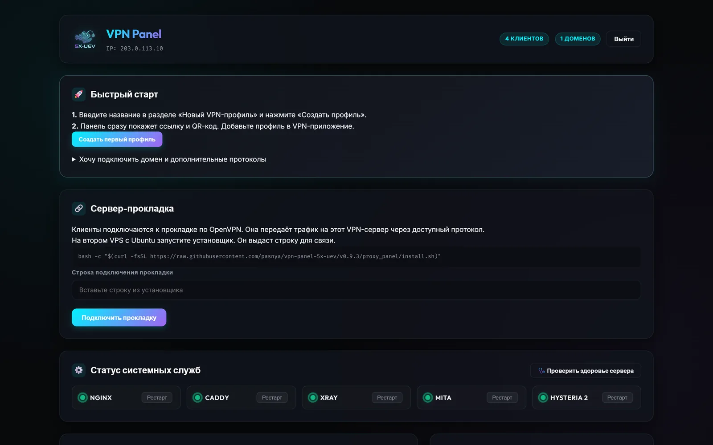
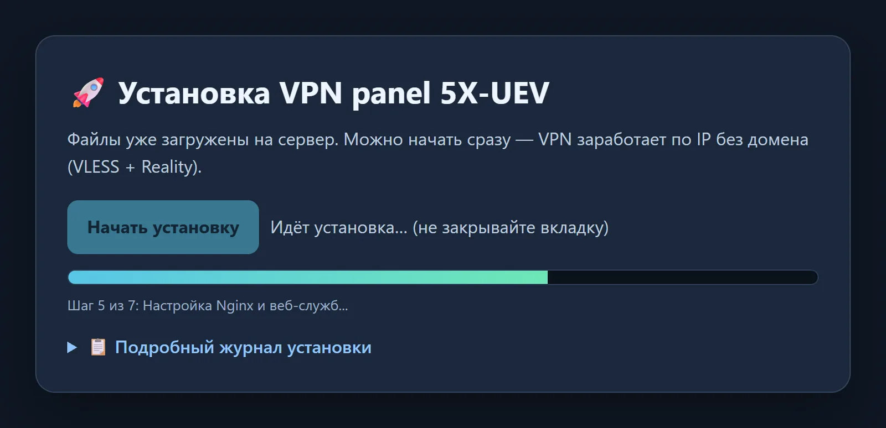
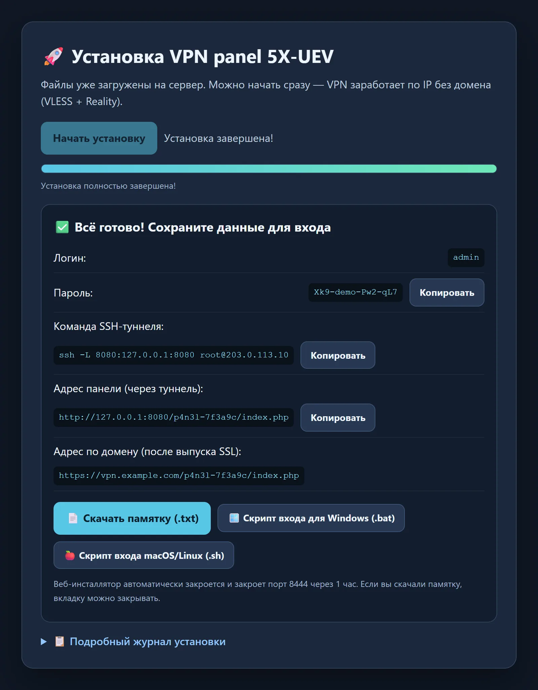
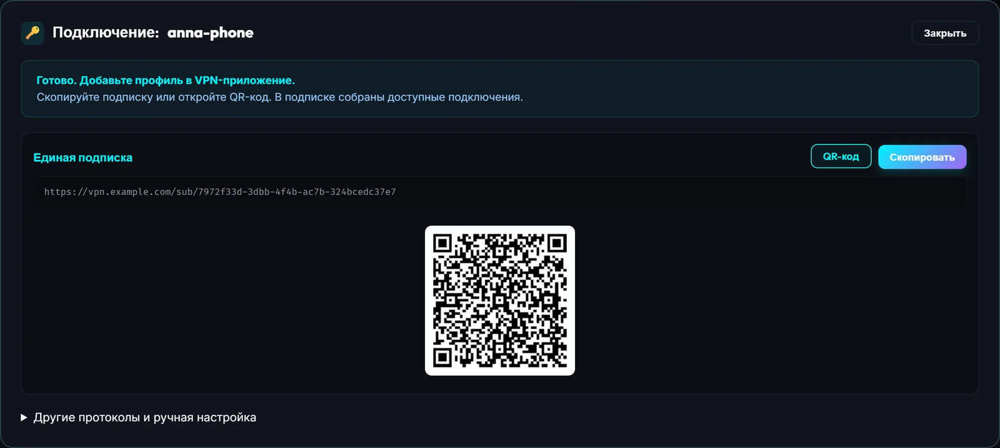
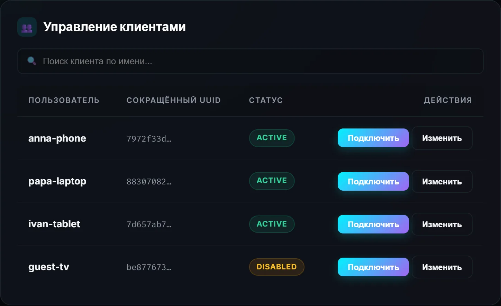
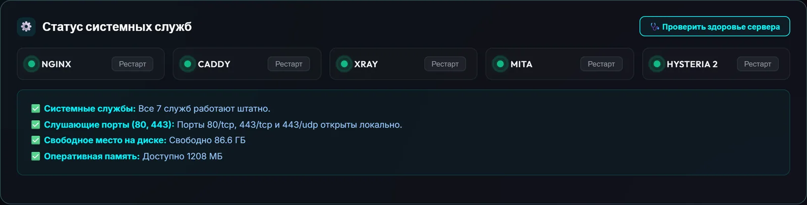

Личный VPN на своём VPS за 3 минуты - без домена и знаний Linux
VPN panel 5X-UEV ставится так просто, что справится даже твоя мама. Да, та самая, что пересылает открытки «С добрым утром четверга». Копируешь одну строку, жмёшь одну кнопку в браузере - всё. Linux учить не надо: мы выучили его за тебя и до сих пор не оправились.
bash -c "$(curl -fsSL https://raw.githubusercontent.com/pasnya/vpn-panel-5x-uev/v0.9.5/install.sh)"Это единственный момент, когда придётся притвориться хакером: вставить строку на сервере от root и нажать Enter. Дальше - кнопочки, прогресс-бар и ни одного страшного слова. Не знаете, куда её вставлять?
- Работает без домена
- Без знания Linux (проверено на гуманитариях)
- 5 протоколов на порту 443
- Бесплатно. Совсем. Даже без подвоха
Всё для своего VPN - в одной панели
Конфиги Xray, Nginx и SSL-сертификаты - то, из-за чего взрослые люди тихо плачут в душе. Панель настраивает всё сама и честно показывает, что работает, а что вы уже успели сломать.
Установка через браузер
Никаких чёрных экранов с бегущими буковками. Установщик сам откроет порты, сам создаст swap, если сервер куплен на сдачу, и выдаст файлик, по двойному клику на который открывается панель. Двойной клик вы осилите, мы в вас верим.
Работает без домена
Домен? Какой ещё домен? Профиль VLESS + Reality работает сразу по IP сервера. Домен прикрутите потом - когда научитесь произносить «A-запись» без нервного тика.
5 протоколов на порту 443
Reality, xHTTP, Hysteria 2, NaiveProxy и Mieru живут на одном порту и даже не дерутся. Не знаете, чем они отличаются? И не надо: по умолчанию всё уже выбрано, оно просто работает.
Каскадный VPN (прокладка)
Второй сервер в России, к которому подключаются обычным OpenVPN-файлом. OpenVPN до зарубежных серверов давно не работает, а до российского - спокойно. Дальше прокладка сама везёт трафик за границу по Reality. Ставится одной командой, связывается одной строкой.
Профиль по одному имени
Пишете «бабушка-планшет», жмёте кнопку - получаете QR-код. Бабушка наводит камеру. Всё. Это была самая сложная часть, и она уже позади.
Диагностика и проверка DNS
Кнопка «Проверить здоровье сервера» скажет, что сломалось, раньше, чем вы успеете написать в чат «у меня ничего не работает, помогите срочно!!!».
Установка на чистый Ubuntu 20.04 / 22.04 / 24.04
Три шага. Если после третьего вы всё ещё ждёте подвоха - его нет, расходимся.
Вставьте команду
Скопируйте строку из начала страницы, вставьте на сервере от
root, нажмите Enter. Поздравляем: вы только что «администрировали Linux», можно добавить в резюме. Без браузера - флаг--auto.Откройте ссылку
Скрипт выдаст ссылку
https://IP_СЕРВЕРА:8444/?token=…. Браузер поворчит про сертификат - он всегда ворчит, характер такой: «Дополнительно» → «Перейти на сайт». Дальше жмите «Начать установку» и идите ставить чайник.Создайте профиль
Введите любое имя, отсканируйте QR-код телефоном - готово. Какое приложение поставить - расписали даже для тех, кто путает Android с андроидом из фильмов.
Что от вас нужно
- VPS с Ubuntu 20.04, 22.04 или 24.04 - арендуется у любого хостера за стоимость пары кофе в месяц.
- Умение нажимать Ctrl+C и Ctrl+V. Серьёзно, это весь технический ценз.
- 3–10 минут и обещание не трогать сервер, пока идёт установка.
- Знание Linux - не требуется. Даже знание того, что такое Linux.
Где вообще вводить эту команду?
После оплаты VPS хостер пришлёт IP-адрес и пароль root. Дальше:
- Windows: Пуск → наберите
PowerShell→ введитеssh root@IP_СЕРВЕРА→ на вопрос про fingerprint ответьтеyes→ введите пароль. - macOS: то же самое, только в программе «Терминал».
- Совсем лень: кнопка «Консоль» в личном кабинете хостера. Правда, вставка там работает не везде - тогда возвращайтесь к первому пункту.
Пароль при вводе не отображается - это не сломалось, это безопасность. Вводите вслепую и жмите Enter, как в молодости.
Как это выглядит
Настоящий интерфейс, никакого фотошопа. Имена клиентов, домен и IP - выдуманные, так что не пытайтесь подключиться к «papa-laptop».












5 протоколов на одном порту 443
Reality работает сразу по IP, остальные включаются после привязки домена. Выбирать ничего не нужно - за вас уже выбрали, расслабьтесь.
- VLESS + Reality без домена
- VLESS + xHTTP HTTPS
- Hysteria 2 UDP / QUIC
- NaiveProxy Caddy
- Mieru TCP
- Cloudflare WARP исходящий трафик
Почему все на одном порту 443 - это хорошо
Звучит как технический пункт для галочки. На деле это главная причина, почему у вас всё будет работать там, где у других «как-то не очень».
🚪 Порт, который открыт везде
443 - стандартный порт HTTPS: через него открывается вообще любой сайт. Его не закрывают ни в отелях, ни в офисах, ни у мобильных операторов, потому что закрыть 443 - значит сломать весь интернет. А вот экзотические порты вроде 1194 или 8388 в таких сетях режут первыми, и «обычный VPN» соседа тихо умирает в аэропорту.
🕶️ Выглядит как обычный сайт
Подключение на 443 похоже на то, как вы открываете любую страницу в браузере. Сервер не торчит в сети странным открытым портом, по которому сразу ясно, что это такое. А если привязан домен, случайный посетитель увидит сайт-заглушку. Скромность украшает, даже сервер.
🔀 Пять запасных выходов
В одной сети лучше работает Reality, в другой - Hysteria 2 по UDP, в третьей - NaiveProxy. Если что-то начало тормозить, просто берёте другую ссылку из той же подписки. На сервере ничего менять не нужно: все пять протоколов уже запущены и ждут своей очереди.
🧱 Один порт вместо зоопарка
Открыть нужно только 80 и 443 - остальное панель сделает сама. TCP-протоколы Nginx разводит по имени сайта (SNI), Hysteria 2 живёт на том же 443, только по UDP. Вам не надо помнить, какой протокол на каком порту. Вам вообще ничего не надо помнить, в этом весь смысл.
Напрямую или через прокладку?
Два способа подключиться к одному и тому же VPN. Выбирайте по устройству и по степени терпения пользователя.
📱 Напрямую к серверу за границей
Устройство подключается к основному серверу по VLESS Reality, xHTTP, Hysteria 2, NaiveProxy или Mieru - любым приложением, которое поддерживает выбранный протокол. Второй сервер не нужен. Подходит для телефонов и компьютеров, куда можно поставить приложение. То есть для 95% случаев.
🔌 Через прокладку в России
Устройство подключается по OpenVPN к прокладке в России, а она передаёт трафик за границу по Reality. Да, OpenVPN до зарубежных серверов режут, но до российского он работает. Для роутеров, рабочих компьютеров и родственников, которым проще открыть один файл, чем «отсканировать QR-код в приложении».
Зачем нужен Cloudflare WARP (и нужен ли он вам)
Коротко: чтобы капризные сайты не косились на ваш сервер. Подробно - ниже, человеческим языком.
😒 Проблема
Ваш VPS живёт в дата-центре, и его IP-адрес для сайтов выглядит как адрес дата-центра. Некоторые сервисы - ChatGPT, Netflix и прочие привереды - такое не любят: показывают капчу, урезают каталог или просто говорят «не сегодня». Сервер ни в чём не виноват, просто у него лицо дата-центра.
🌀 Решение
Cloudflare WARP - бесплатная сеть Cloudflare. Панель подключает к ней сервер, и запросы к привередливым сайтам уходят уже через Cloudflare. Сайт видит IP Cloudflare вместо IP вашего VPS - и успокаивается. Вы тоже.
🎛️ Два режима
Умный - через WARP идут только OpenAI, Netflix и ipify (сервис, показывающий IP - чтобы проверить, что всё работает), остальное напрямую и быстро. Глобальный - весь исходящий трафик сервера через WARP. Не знаете, что выбрать? Умный. Он стоит по умолчанию не просто так.
Как включить: кнопка «Подключить Cloudflare WARP» в панели. Одна. Кнопка. Никаких ключей, аккаунтов и регистраций.
Нужен ли он вам: если всё и так открывается - не трогайте. Лучшая настройка - та, которую не пришлось делать.
Сравнение с аналогами
| Функция | 5X-UEV | 3x-ui | Ручная настройка |
|---|---|---|---|
Веб-установщик и скрипты входа .bat / .sh | ✅ Да | ❌ Нет | ❌ Нет |
| 5 протоколов на 443 порту (Reality, xHTTP, Hysteria 2, Naive, Mieru) | ✅ Из коробки | Только Xray | ⚙️ Сложно |
| Готовый OpenVPN сервер-прокладка (каскадный VPN) | ✅ В 1 строку | ❌ Нет | ⚙️ Очень сложно |
| Проверка DNS перед SSL и диагностика служб | ✅ Встроена | ❌ Нет | ❌ Нет |
Подробное сравнение с 3x-ui, Marzban и Remnawave - для кого какая панель: «Какую панель VPN выбрать».
Хватит читать - иди ставь
Одна команда, одна кнопка, несколько минут. Если не получится - вы первый, и мы очень хотим об этом узнать в Issues на GitHub. Бесплатно и с открытым кодом.